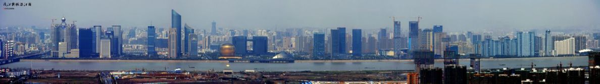

杭州，簡稱“杭”，古稱臨安、錢塘，是浙江省省會、副省級市、杭州都市圈核心城市，國務院批復確定的中國浙江省省會和全省經濟、文化、科教中心、長江三角洲中心城市之一 [1] 。截至2019年，全市下轄10個區、2個縣、代管1個縣級市，總面積16853.57平方千米，建成區面積648.46平方千米，常住人口1036萬人，城鎮人口813.26萬人，城鎮化率78.5%。
杭州地處中國華東地區、錢塘江下游、東南沿海、浙江北部、京杭大運河南端，是環杭州灣大灣區核心城市 、滬嘉杭G60科創走廊中心城市 、國際重要的電子商務中心。杭州人文古跡眾多，西湖及其周邊有大量的自然及人文景觀遺跡，具代表性的有西湖文化、良渚文化、絲綢文化、茶文化，以及流傳下來的許多故事傳說。
杭州自秦朝設縣治以來已有2200多年的歷史，曾是吳越國和南宋的都城。因風景秀麗，素有“人間天堂”的美譽。杭州得益於京杭運河和通商口岸的便利，以及自身發達的絲綢和糧食產業，歷史上曾是重要的商業集散中心。後來依託滬杭鐵路等鐵路線路的通車以及上海在進出口貿易方面的帶動，輕工業發展迅速。新世紀以來，隨著阿裏巴巴等高科技企業的帶動，互聯網經濟成為杭州新的經濟增長點。
2018年世界短池游泳錦標賽、2022年亞運會在杭州舉辦。2020年中國百強城市排行榜排第5位。2019年6月未來網路試驗設施開通運行。 11月29日，杭州直飛開羅航線正式開通。2019年12月，《長江三角洲區域一體化發展規劃綱要》將杭州定位為特大城市。
